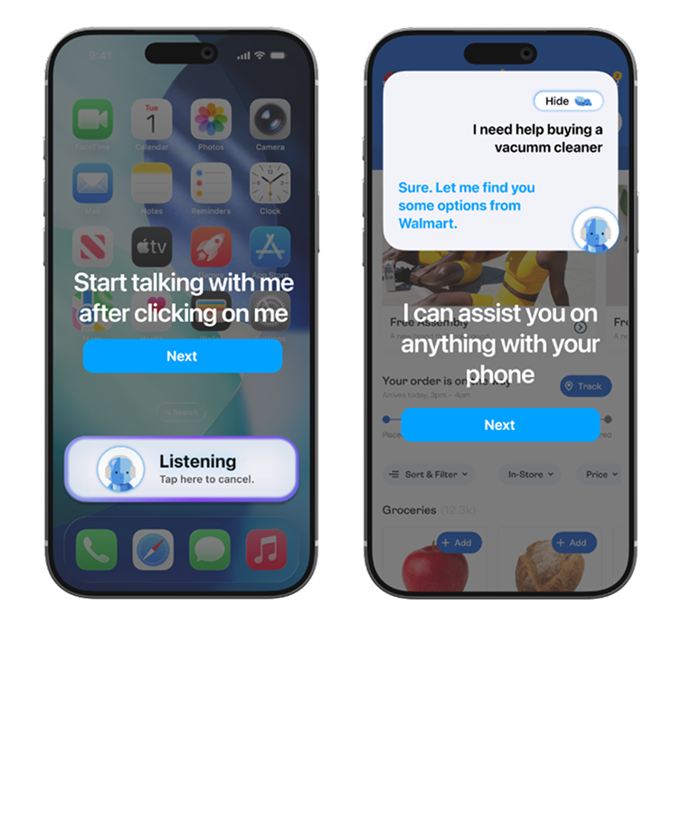
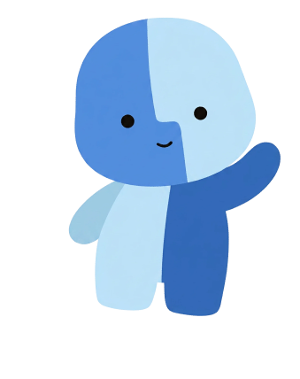
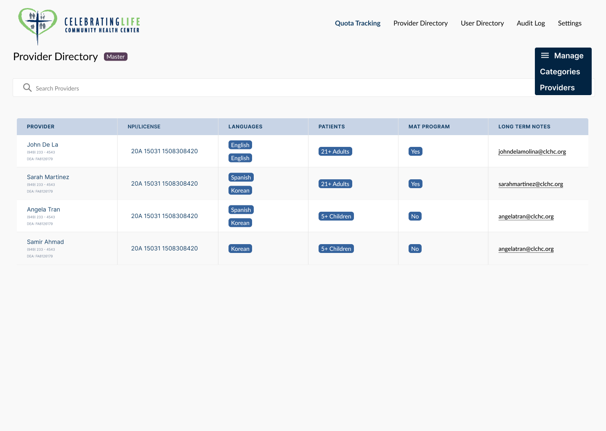
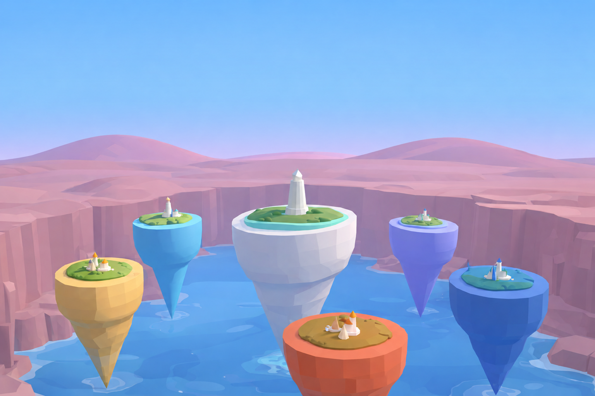

Medtronic GCIT
Technical Product Intern
Turning product requirements into iOS features and supporting integrations that connect surgical workflows with patient data systems.

An iOS accessibility tool designed to reduce cognitive overload for seniors. A native iOS integration concept that guides people through unfamiliar tasks, building confidence and independence.
View Case Study

Redesigning workflows for the Celebrating Life Community Health Center. An accessible appointment and provider management web app supporting 8000+ patients annually.
View Case Study

An AI-powered journal that turns everyday memories into buildings across six emotional islands. A playful 3D world for reflecting on experiences, recognizing emotional patterns, and exploring your inner landscape.
View Project on DevpostVisualizing social connections as a living galaxy. A React & FastAPI powered experience that reveals the hidden constellations in our networks.
View Project on DevpostA little about me
I'm Katrina Wang, a Computer Science student at UC Irvine interested in building human-centered products at the intersection of technology, design, and real-world impact. My experience spans software engineering, product management, and HCI research across healthcare, accessibility, and AI.
I enjoy turning ambiguous problems into thoughtful, usable products, from understanding user needs and shaping product decisions to designing experiences and bringing ideas to life through code.
Technical Product Intern
Turning product requirements into iOS features and supporting integrations that connect surgical workflows with patient data systems.
Software Product Designer
Partnering with engineers to design accessible healthcare workflows, from early requirements to a working web application.
User Experience Design Intern · UC Irvine
Using playtesting and user feedback to improve a learning game and create a cohesive visual design system.
Python, C / C++, Java, Objective-C, JavaScript, SQL, HTML / CSS
React, FastAPI, Three.js, SwiftUI, UIKit, Tailwind CSS, NumPy, Pandas
Git, Xcode, SQLite, REST APIs, Linux, Codex, Claude Code, Generative AI / LLM APIs